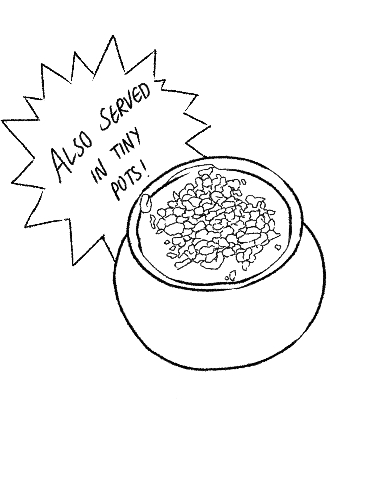

Kulfi is a frozen dairy desert originating in the indian subcontinent in the 16th century.
It is often described as "traditional Indian ice cream, usually consumed during summer time.

Ingredients
2 litre milk
¼ tsp saffron
¼ tsp saffron
½ cup sugar
½ tsp cardamom powder
2 tbsp cashew (chopped)
2 tbsp almonds (chopped)
2 tbsp pistachios (chopped)
Prepare and enjoy!
Firstly, in a large pot heat 2-litre milk, ¼ tsp saffron.
Stir and get the milk to a boil, without burning.
Continue to cook on low flame until the milk thickens.
Now simmer for 15 minutes or until the milk reduces to a quarter.
Also, add ½ cup sugar and cook for 2 minutes on low flame.
Now add ½ tsp cardamom powder, 2 tbsp cashew, 2 tbsp almonds and 2 tbsp pistachios.
Mix well and the kulfi mixture is ready to set.
Pour the kulfi mixture into kulfi moulds. if you do not have moulds, you can pour it in different glass cups.
Cover and freeze for 8 hours or until sets completely.
After 8 hours, the kulfi has set completely and is ready to serve.
Finally, garnish the malai kulfi with few chopped pistachios and enjoy